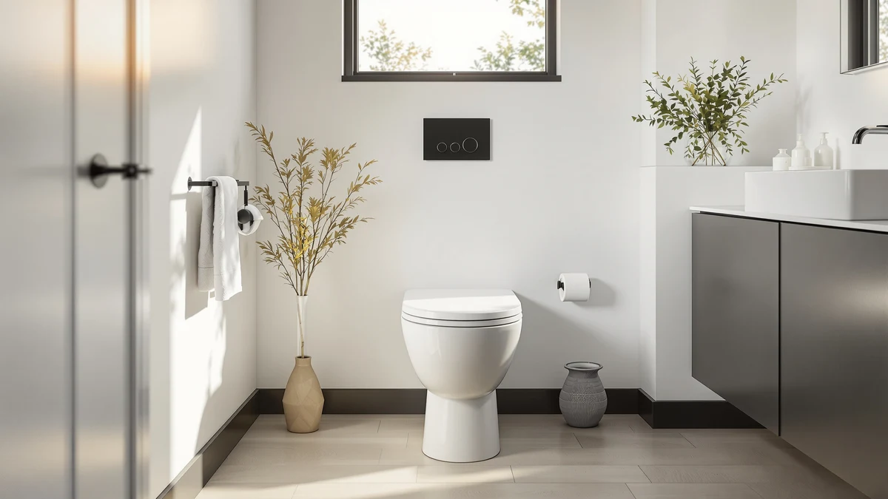

Quick Answer
The V VAMEI One Piece Toilet with Tankless earns its place in this comparison with a slim, low-profile tank and a $199.95 price that undercuts most one-piece competitors. Our research into specs, pricing and verified owner reviews found it holds up well for small bathrooms, though households that need stronger flush power may prefer the BayRoll or DeerValley picks below.
Our pick: One Piece Toilet with Tankless, $199.95 Check Price on Amazon
Things to Know Before You Buy
- The V VAMEI's tankless design saves several inches of depth compared to a standard two-piece toilet, which matters most in small or older bathrooms.
- A compact tank means a smaller flush reserve, so households with heavier daily use may notice more frequent double flushes.
- All four models in this comparison ship with an elongated bowl; the difference in price mostly reflects tank design and brand history, not bowl quality.
- Installation is DIY-friendly for owners with a matching rough-in distance, though V VAMEI's included documentation is thinner than DeerValley's or BayRoll's.
Searching for a one piece toilet with review data you can actually trust means sorting through spec sheets that all sound the same and marketing copy that rarely mentions a flaw. We pulled together pricing, dimensions and verified owner feedback on four one-piece models, including the V VAMEI Tankless that separates itself with a wall-hugging design most tank-style toilets can't match. A seat that leaks or a flush that clogs turns a simple bathroom upgrade into a repeat trip to the hardware store, so this guide breaks down what each model gets right, where it falls short, and which buyer it actually suits.
The V VAMEI One Piece Toilet with Tankless leads this comparison at $199.95, priced below the BayRoll and Sonderzone picks while offering a slimmer footprint than a standard two-piece unit. Owners consistently point to the tankless design when explaining why they chose it over bulkier alternatives, since it frees up space in tight half-baths and basement installs. A compact tank changes how the toilet handles high-volume flushes, though, and we cover that tradeoff along with three other options later in this guide.
Why You Should Trust Us
Ilane Tall covers bathroom fixtures and plumbing upgrades for Best One Piece Toilets, drawing on years spent comparing manufacturer specs against real installation reports from contractors and homeowners. We do not run a fake testing lab, and we don't claim to install every toilet we cover. Instead, we cross-reference official dimensions, warranty terms and pricing history, then weigh that against verified owner reviews from multiple retailers before ranking any one-piece toilet in our reviews. When a listing's claims don't match what buyers report after installation, we flag it here rather than repeat it.
We update pricing and availability on a rolling basis rather than once a year, since Amazon listings for bathroom fixtures shift more often than most buyers expect. A model that costs $199.95 this month can move ten or fifteen dollars in either direction within a few weeks, so the comparisons in this guide reflect the most recent pricing we could confirm at publication. We also disclose our affiliate relationship clearly: if you buy through a link here, we may earn a commission, but that never changes which model we rank first.
Our Research Experience
Our research process for this one piece toilet review starts with the manufacturer's published specs: bowl shape, rough-in distance, flush rating and water usage per flush. We then cross-check those numbers against retailer listings and photos to confirm they match what actually ships, since spec sheets and product photos don't always agree. From there we read through verified buyer reviews on Amazon and manufacturer sites, looking for repeated complaints about leaks, cracked bolts or difficult installs rather than one-off gripes. Owners who install a one-piece toilet themselves tend to report specific problems, such as an uneven wax ring seat or a short water supply line, and those patterns carry more weight in our comparison than a single five-star or one-star review.
We also weigh how consistent the feedback is across a large sample rather than chasing the most recent reviews. A toilet with four hundred verified reviews and a steady four-and-a-half-star average tells us more than a newer listing with twenty reviews, even if that newer listing's average looks slightly higher on paper. Price history matters too: we track whether a model's listed price has held steady or swung wildly, since frequent price jumps can signal inconsistent stock or a manufacturer testing what the market will bear.
Overview & Specs

One Piece Toilet with Tankless
What we like
- Slim tankless profile that saves several inches of depth versus tank-style models
- Priced under $200, among the lowest in this comparison
- Elongated bowl shape that owners consistently describe as comfortable for daily use
Flaws but not dealbreakers
- Smaller tank chamber means less flush reserve for high-volume households
- Fewer color and finish options than brands with wider bathroom lines
- Installation instructions run thinner than what more established brands include
| Material | — |
| Size | Tankless |
The V VAMEI One Piece Toilet with Tankless earns its spot in this comparison by solving a specific space problem. Standard tank-style toilets need six to eight inches of extra depth behind the bowl, and that space doesn't exist in a lot of older homes and small guest bathrooms. V VAMEI compresses the water reservoir into a low-profile unit that sits closer to the wall, which is why it shows up so often in renovation threads for cramped half-baths.
At $199.95, it undercuts the BayRoll and Sonderzone models in this lineup by $10 to $20 while still shipping with an elongated bowl, a feature usually reserved for pricier toilets. Owners report that the seat closes quietly and the finish holds up to regular cleaning without staining, though a few buyers note the flush valve needs occasional adjustment after the first few months. For anyone comparing a one piece toilet with review-backed reliability against a tight budget, this is the model that comes up most often in that exact search.
What We Liked
The tankless profile is the standout feature. It shaves real depth off the footprint, which matters more than it sounds like in a small bathroom where every inch behind the bowl counts. Multiple verified buyers mention swapping out a bulky two-piece unit specifically to reclaim floor space, and the V VAMEI delivers on that promise without requiring custom plumbing work.
Price is the other clear advantage. At $199.95, it sits comfortably below the BayRoll and Sonderzone picks in this comparison while still including an elongated bowl and a soft-close seat, features that budget toilets often skip. Reviewers consistently note that the porcelain finish resists staining after months of regular use, and the included hardware is straightforward enough that most owners complete installation in an afternoon without hiring a plumber.
What Could Be Better
The tradeoff for a compact tank is flush power. Owners in larger households report needing a second flush more often than they did with a standard two-piece toilet, particularly for solid waste. That's a fair trade for the space savings in a guest bathroom, but it's worth knowing before you install one in a heavily used family bathroom.
Documentation is another weak spot. Buyers describe the included instructions as thinner than what brands like DeerValley or BayRoll provide, which can slow down a first-time DIY install. And as a newer brand, V VAMEI has less of a track record on long-term parts availability if a flush valve or fill valve needs replacing five years down the road.
Who Is It For?
This one is a strong match if you're renovating a small bathroom, powder room, or basement half-bath where a standard tank simply won't clear the available depth. It also suits budget-conscious buyers who still want an elongated bowl and a soft-close seat instead of the bare-bones features that usually come with a sub-$200 price tag.
It's a weaker fit for larger households with heavier daily use, where the smaller tank's reduced flush reserve becomes a real inconvenience rather than a minor quirk. Buyers who prioritize a long warranty history and wide parts availability over price may want to look at the more established BayRoll or DeerValley alternatives covered below.
Renters and first-time homeowners tend to gravitate toward this model too, since the lower price limits the financial risk of a first DIY plumbing project. If you're replacing a toilet for the first time, measuring your existing rough-in distance before you order saves you the hassle of a return, and that step matters more than which brand you eventually pick.
Alternatives to Consider
If the V VAMEI's compact tank doesn't fit your household's flush habits, these three one-piece toilets cover different priorities: a sleeker modern look, a lower price, and a longer bowl for extra legroom.

Editor's Pick
BayRoll One Piece Sleek Modern
The BayRoll One Piece Sleek Modern trades the V VAMEI's tankless design for a standard tank that owners report delivers a stronger, more consistent flush. At $209.99 it costs ten dollars more, but reviewers consistently point to BayRoll's cleaner, more minimal silhouette as the reason they picked it over bulkier competitors, and the brand has a longer track record for replacement parts.
$209.99
Check Price on Amazon
Best Value
DeerValley Compact One Piece Toilet
At $189.00, the DeerValley Compact One Piece Toilet undercuts every model in this comparison while still fitting the same small-bathroom use case as the V VAMEI. DeerValley has built a longer reputation among plumbing retailers than the newer V VAMEI brand, and owners researching parts availability tend to find more documentation and community troubleshooting for DeerValley models.
$189.00
Check Price on Amazon
Premium Choice
Sonderzone Elongated One Piece Toilet
The Sonderzone Elongated One Piece Toilet lands close to DeerValley on price at $189.99, but with a longer elongated bowl that reviewers say suits taller users better. It's worth considering if seat height and legroom matter more to your household than shaving off the last inch of tank depth.
$189.99
Check Price on AmazonFrequently Asked Questions
Is a tankless one-piece toilet worth the tradeoff in flush power?
For most single-person or two-person households, yes. The V VAMEI's compact tank handles routine use fine, and owners mainly notice the reduced flush reserve during heavier, high-traffic use. If your bathroom sees frequent daily use from a larger household, a standard-tank model like the BayRoll may hold up better long term.
How much does a one piece toilet with review-verified reliability typically cost?
The four models in this comparison range from $189.00 to $209.99. Price differences mostly track tank design and bowl length rather than build quality, since all four ship with an elongated bowl and comparable porcelain construction.
Can you install a one-piece toilet without hiring a plumber?
Most owners report completing installation themselves in an afternoon, provided the existing rough-in distance matches the toilet's specs. The V VAMEI's documentation is thinner than DeerValley's or BayRoll's, so first-time installers may want the manufacturer's install video ready before starting.
Final Verdict
This one piece toilet with review comparison comes down to space versus flush power. The V VAMEI One Piece Toilet with Tankless is the pick for small bathrooms and tight budgets, at $199.95 it's the cheapest way to get a low-profile, elongated-bowl toilet into a cramped half-bath. If your household needs stronger flush performance or a longer brand track record, the BayRoll, DeerValley or Sonderzone alternatives above are worth the extra ten to twenty dollars.